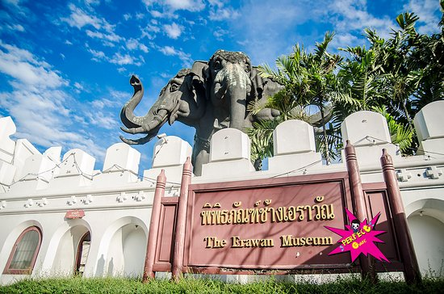

ไฮไลท์ของสถานที่
ไฮไลท์ของูพิพิธภัณฑ์ช้างเอราวัณ
ภาพถ่ายของ : พิพิธภัณฑ์ช้างเอราวัณ แหล่งท่องเที่ยวที่สำคัญและโดดเด่นแห่งหนึ่งของจังหวัดสมุทรปราการ ตั้งอยู่ก่อนถึงเมืองโบราณ เป็นประติมากรรมลอยตัวรูปช้าง 3 เศียร ภายในตัวอาคารพิพิธภัณฑ์ช้างเอราวัณใช้เป็นสถานที่จัดเก็บโบราณวัตถุที่มีค่า แยกเป็น 3 ชั้น ตามความเชื่อในหลักไตรภูมิ คือ ชั้นบาดาล ชั้นโลกมนุษย์ และชั้นสวรรค์ ภายในตกแต่งสวยงามเป็นการผสมผสานศิลปะหลากหลายรูปแบบ เช่น การใช้กระจกสีแบบศิลปะตะวันตก เครื่องเบญจรงค์สลับลวดลายสอดสี การดุนโลหะบนแผ่นดีบุกของช่างเมืองนครศรีธรรมราช และรูปปั้นโบราณชนิดต่างๆ
ไฮไลท์ของูสถานตากอากาศบางป
พิพิธภัณฑ์ช้างเอราวัณ แหล่งท่องเที่ยวที่สำคัญและโดดเด่นแห่งหนึ่งของจังหวัดสมุทรปราการ ตั้งอยู่ก่อนถึงเมืองโบราณ เป็นประติมากรรมลอยตัวรูปช้าง 3 เศียร ภายในตัวอาคารพิพิธภัณฑ์ช้างเอราวัณใช้เป็นสถานที่จัดเก็บโบราณวัตถุที่มีค่า แยกเป็น 3 ชั้น ตามความเชื่อในหลักไตรภูมิ คือ ชั้นบาดาล ชั้นโลกมนุษย์ และชั้นสวรรค์ ภายในตกแต่งสวยงามเป็นการผสมผสานศิลปะหลากหลายรูปแบบ เช่น การใช้กระจกสีแบบศิลปะตะวันตก เครื่องเบญจรงค์สลับลวดลายสอดสี การดุนโลหะบนแผ่นดีบุกของช่างเมืองนครศรีธรรมราช และรูปปั้นโบราณชนิดต่างๆ อาท – รูปถ่ายของ พิพิธภัณฑ์ช้างเอราวัณ, เมืองสมุทรปราการ